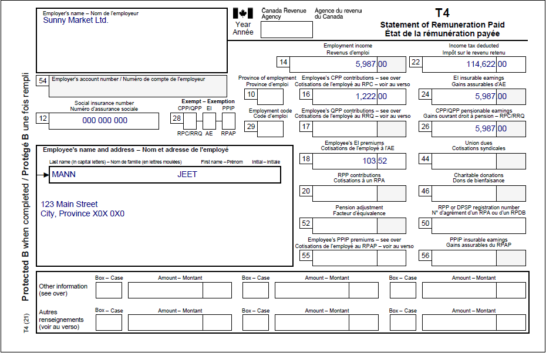
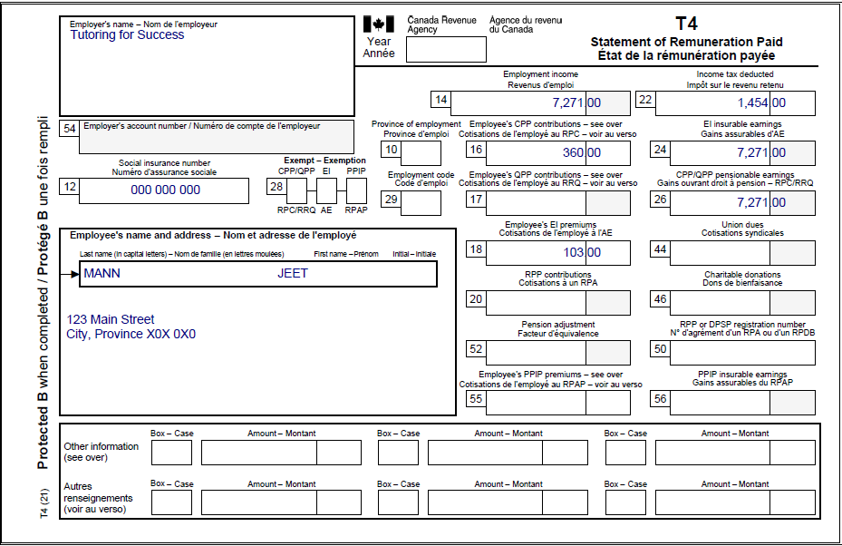
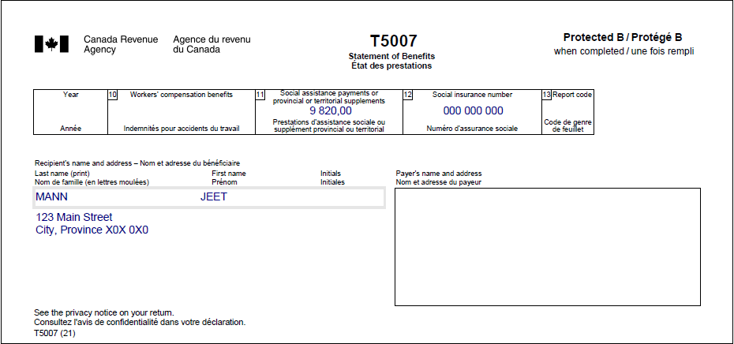

Newcomer couple who immigrated to Canada
Pre-test question
Question One
That's correct
Not all newcomers have a SIN. Some may have an individual tax number (ITN) or a temporary tax number (TTN). These numbers allow individuals without a SIN, to submit their income tax return and apply for benefits.
Sorry, that's incorrect
Not all newcomers have a SIN. Some may have an individual tax number (ITN) or a temporary tax number (TTN). These numbers allow individuals without a SIN, to submit their income tax return and apply for benefits.
Question Two
That's correct
Newcomer status applies only for the first tax year that the individual is a new resident of Canada. Afterwards, the individual has been a resident for tax purposes for the whole year and prepares a regular tax return.
Sorry, that's incorrect
Newcomer status applies only for the first tax year that the individual is a new resident of Canada. Afterwards, the individual has been a resident for tax purposes for the whole year and prepares a regular tax return.
Instructions
- Open the tax software
- Review the Background information and Required slips (tax slips, receipts, etc.)
- Provide all required information for the appropriate sections of the tax software
- Once completed, compare your results with the solution provided
- Afterwards, refer to the Takeaway points
Background information
Situation
Jeet and Mia immigrated to Canada from Indonesia on March 1, 2022, and do not have Canadian citizenship. Jeet and Mia both worked at the same Indonesian school in 2022 where Jeet’s world income outside of Canada was $3,000 CAN and Mia’s was $1,600 CAN. After their arrival in Canada, Jeet worked part-time for two companies and received social assistance, while Mia has not earned any income in Canada. Jeet and Mia do not own any foreign property.
Identification information
| Name | Jeet Mann |
|---|---|
| Social insurance number (SIN) | 000 000 000 |
| Address | 123 Main Street City, Province X0X 0X0 |
| Date of birth | January 9, 1986 |
| Date of entry into Canada | March 1, 2022 |
| Marital status | Married to: |
Required slips
T4 – Statement of Remuneration Paid (Sunny Market Ltd.) (for Jeet)
Text version of the T4 slip
T4 – Statement of Remuneration Paid
Protected B
Employer’s name: Sunny Market Ltd.
Employee’s name and address:
Last name: Mann
First name: Jeet
123 Main Street
City, Province X0X 0X0
Box 12: Social insurance number: 000 000 000
Box 14: Employment income – line 10100: 5,987.00
Box 16: Employee’s CPP contributions – line 30800: 122.26
Box 18: Employee’s EI premiums – line 31200: 103.52
Box 22: Income tax deducted – line 43700: 1,146.22
Box 24: EI insurable earnings: 5,987.00
Box 26: CPP/QPP pensionable earnings: 5,987.00
T4 – Statement of Remuneration Paid (Tutoring for Success) (for Jeet)
Text version of the T4 slip
T4 – Statement of Remuneration Paid
Protected B
Employer’s name: Tutoring for Success
Employee’s name and address:
Last name: Mann
First name: Jeet
123 Main Street
City, Province X0X 0X0
Box 12: Social insurance number: 000 000 000
Box 14: Employment income – line 10100: 7,271.00
Box 16: Employee’s CPP contributions – line 30800: 360.00
Box 18: Employee’s EI premiums – line 31200: 103.00
Box 22: Income tax deducted – line 43700: 1,454.00
Box 24: EI insurable earnings: 7,271.00
Box 26: CPP/QPP pensionable earnings: 7,271.00
T5007 – Statement of Benefits (for Jeet)
T5007– Statement of Benefits
Protected B
Recipient’s name and address:
Last name: Mann
First name: Jeet
123 Main Street
City, Province X0X 0X0
Box 11: Social assistance payments or provincial or territorial supplements: 9,820.00
Box 12: Social insurance number: 000 000 000
Review your results
Solutions will be available in February 2023 as printable PDF.
Takeaway points
Steps to follow
- Review their background information and required slips
- In CRA questions, select Yes from the Are you filing an income tax return with the CRA for the very first time? drop-down menu and No from the Do you have Canadian citizenship? drop-down menu
- In Interview setup, tick the boxes next to:
- Immigrant, emigrant, non resident taxpayer, you are a Canadian resident and your spouse immigrated to Canada in the year in the Specific situations section
- Employment income and employment insurance benefits (T4, T4E/RL-6) and Social assistance, worker’s compensation (T5007/RL-5) in the Employment and other benefits section
- On the Immigrant, emigrant, non-resident page, click the + sign next to You immigrated to Canada in 2022 to enter Jeet’s Date of entry and leave the next field blank since Jeet and his wife have the same Date of entry and have been living together since that date
- Under the Canadian sourced income (excluding Part XIII income) earned when you were not a resident of Canada heading, select Income from employment in Canada from the Source of income drop-down menu and enter the amount of $0.00 into the field
- Under the Canadian source Part XIII income PLUS foreign sourced income earned when you were not a resident of Canada heading, enter Indonesia into the Name of country field, select Net employment income from the Foreign source of income drop-down menu and enter the amount of $3,000 into the next field
- Follow the same steps for Mia’s tax return, except enter the amount of $1,600 for her Net employment income while not a resident of Canada
- Click Social assistance, worker’s compensation in the left-side menu, then click the + sign next to T5007 to enter Jeet’s T5007 information
- After entering Jeet’s T5007 information, select Yes from the Did you live with your spouse or common-law partner when you received the social assistance benefits? drop-down menu, then select Family Head from the Select the person whose name appears on the slip drop-down menu, and finally select Original from the Is this an amended slip? drop-down menu
Income earned prior to immigration is not reported in the solution because it is only used to calculate benefit and credit eligibility.
Jeet’s Basic personal amount and Spouse or common-law partner amount are reduced. These amounts are prorated by the tax software based on the amount of time he has been in Canada.
For more information refer to UFile instructions.